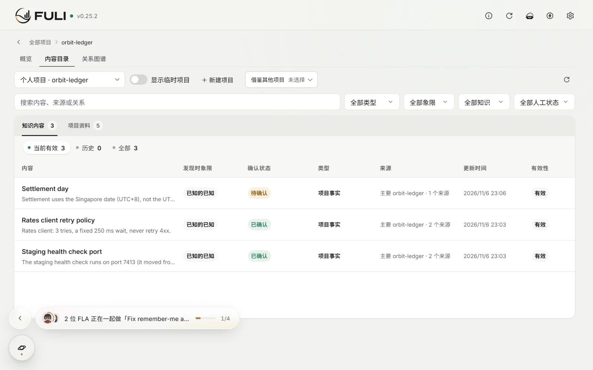
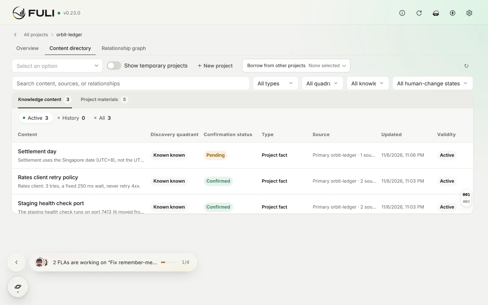
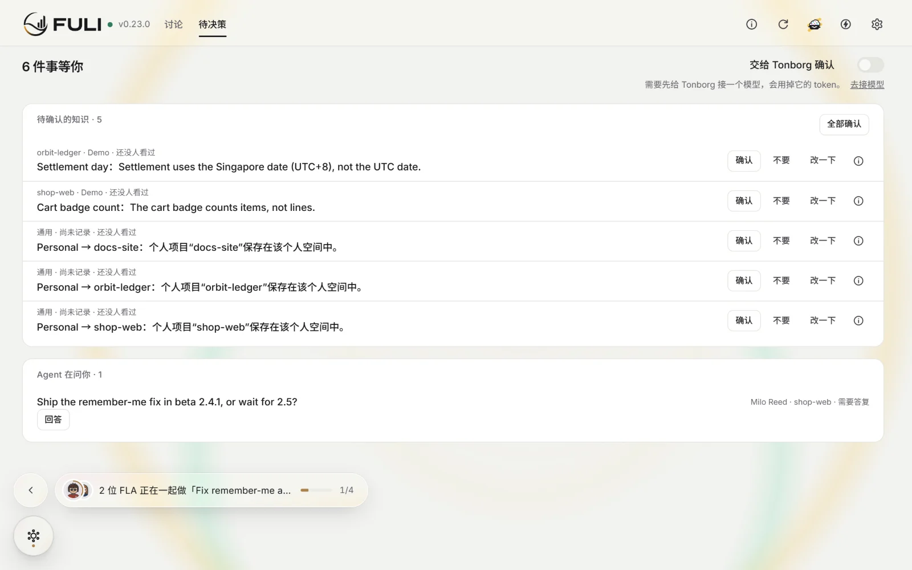
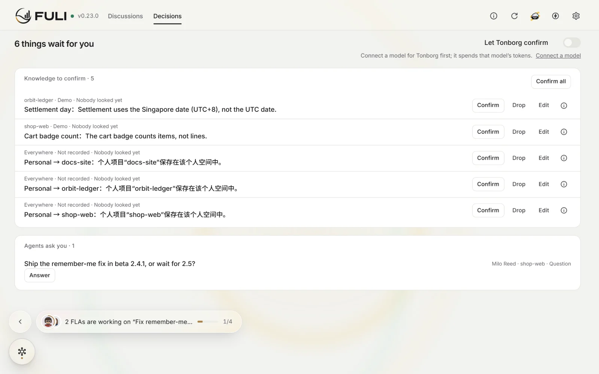

抢先体验 · npm beta 0.23.0-beta.1
让每一次协作，
都产生复利。
这是下一版的公开预览，给愿意先试新功能的人用。下面列出它相对稳定版 0.23.0 的全部变化。
$ npm install --global fuli-context@beta
$ fuli setup
Token 与准确率
先给标题，
需要时再读正文。
入口在同一会话里只发变了的部分，任务要用的知识按需取回。真实客户端上测的：
- 6 轮入口
- 48.2 → 24.3 KB
- 送到对的知识
- 0/6 → 4/6
- 需要项目知识的任务做成
- 3/18 → 18/18
- 接了模型
沉淀
说过一次，
就沉淀下来。
- 不接模型
- 接了模型




项目
每个项目，
一位负责人。
- 不接模型
- 接了模型


你的 FLA
在哪个目录，
都能叫到你的 Agent。
用 @名字 叫来你的长期 Agent（FLA）。换一个 AI 客户端，还是同一位搭档：职责、工作记忆和对话都在 FULI。
@Milo Reed 修一下登录页记住密码失效的问题
已修复：session.ts 在刷新令牌时覆盖了 remember 标记。补了 2 个测试，均通过。
自成长
FLA 会自己成长。


 FLA
FLA


和你配合
长出自己的
Workbench 和 Workflow。
每个 FLA 有自己的 Workbench 看板。重复的做法变成 Workflow，你确认才生效；反复要做的事，它能做成 Agent App，你批准才运行。
- Workbench
每个 FLA 有自己的 Workbench，看板上是派给它的任务。几位 FLA 一起做的任务，团队卡片写明谁负责哪部分、做到哪一步。
- Workflow
FLA 从反复出现的做法里提出 Workflow，你在它的页面确认后才生效。Workflow 不会自己运行，用到时才读。
- Agent App
反复要做的事，FLA 可以做一个小工具或页面。你批准这个版本之后，它才会运行。
- 职业插件：按职业准备的起步套件，从开源技能包里挑选。
- 自成长 v2：按任务结果给经验标上验证状态，经验变成检查，重复的步骤变成工具。
内置角色
每个空间，
自带四位专职。
Astro 接住还没归属的对话、写复盘；Jefa 管项目和看板；Bole 管 Agent 的招聘和绩效；Tonborg 按你的偏好判断，每次说明原因。
- 接了模型
圆桌
圆桌，
像聊天一样。
Agent 之间直接对话：「即时对话」马上唤醒对方回答，「留言板」等它下次工作时回。每条消息写明对方的实际状态。
Milo Reed即时对话 发给 Nova Lane
Nova Lane已唤醒 马上回答
Milo Reed
Nova Lane
装在你的电脑上
下载客户端，
数据都在本机。
双击安装，Node.js 和图数据库都已内置。知识、关系和历史存在你电脑上的 Neo4j；格式要变时先问你。
相对稳定版 0.23.0 的全部变化
这里列出这个预览版相对当前稳定版 0.23.0 的全部新功能和变化，不只是比上一个 beta 多了什么。发布前会跑完整的自动测试，但还没有经过稳定版那样的长期使用；遇到问题，请在 GitHub 提 issue。
新功能
- 下一个预览版的新功能会列在这里。
变化
- 相对稳定版改了什么、去掉了什么，会列在这里。
升级前要知道
- 数据格式有没有变化、怎么退回，会写在这里。
装上预览版
下载客户端（推荐）
双击安装，不用终端。Node.js、图数据库都已内置。已经装过 FULI 的，安装包会直接更新，数据保留。
下载 Windows 版下载 macOS 版macOS 版需要 Apple 芯片和 macOS 13.5 以上，暂未签名：第一次打开被拦下时，到「系统设置 › 隐私与安全性」点「仍要打开」。
FULI 对 AI 友好
用终端安装
已经装了 FULI 的话，先运行 fuli stop，并备份数据目录。下面的命令用原来的安装脚本，只是把安装的包换成 fuli-context@beta，装完会接着运行 fuli setup。
curl -fsSL https://xn--8ovp9s.xn--m8txu.com/fuli/install.sh | FULI_NPM_PACKAGE_SPEC=fuli-context@beta shmacOS / Linux
$env:FULI_NPM_PACKAGE_SPEC='fuli-context@beta'; irm https://xn--8ovp9s.xn--m8txu.com/fuli/install.ps1 | iexWindows PowerShell
npm install --global fuli-context@beta && fuli setupnpm
想回到稳定版：去掉 FULI_NPM_PACKAGE_SPEC 再运行一次安装脚本。稳定版的版本号更低，原生 Provider 需要 fuli setup --allow-provider-downgrade。预览版升级过的数据（自动升级的，和你确认过的迁移），旧版本打不开，只能用升级前的备份恢复。